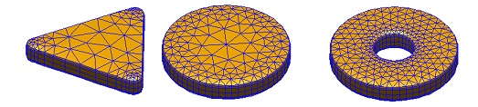

The edgeprofile class
The edgeprofile class can be used to set the edge profile for particles extruded from polygons.
Contents
Initialization
% initialization of EDGEPROFILE object with super-circle rounding edge = edgeprofile( height, nz ); % pass additional arguments edge = edgeprofile( height, nz, op, PropertyName, PropertyValue ); % user-defined position POS and z-values for edge profile edge = edgeprofile( pos, z, op, PropertyName, PropertyValue );
- height is the height of the nanoparticle.
- nz is the number of z-points used for extrusion (see polygon3).
- pos is the list of positions defining the edge.
- z is an array of z-points used for extrusion.
In the position list, which is automatically generated for super-circles, pos(:,1)<0 refers to positions inside the polygon plate which are displaced vertically according to pos(:,2). pos(:,1)>0 refers to points of the ribbon around the plate, which are displaced horizontally. The edge profile can be plotted with plot(edge).
The additional arguments passed to edgeprofile have the following meaning
The tripolygon function
% extrude polygon POLY
p = tripolygon( poly, edge );
extrudes the polygon along the z-direction. tripolygon builds upon the polygon3 class, which adds more flexibility to the creation of extruded particles. However, in many cases tripolygon suffices for the creation of particles extruded from polygons.
Examples
The following examples show how to create triangular and disk-shape nanoparticles.
% rounded triangle and disk poly1 = round( polygon( 3, 'size', [ 30, 30 ] ) ); poly2 = polygon( 30, 'size', [ 30, 30 ] ); % edge profile edge = edgeprofile( 5 ); % extrude particles p1 = tripolygon( poly1, edge ); p2 = tripolygon( poly2, edge ); % plot particles (shift P2) plot( [ p1; shift( p2, [ 30, 0, 0 ] ) ], 'EdgeColor', 'b' );

For the torus-shape particle shown on the right of the above figure, we proceed as follows
% inner and outer polygon for torus-shaped particle poly1 = polygon( 30, 'size', [ 10, 10 ], 'dir', -1 ); poly2 = polygon( 30, 'size', [ 30, 30 ], 'dir', 1 ); edge = edgeprofile( 5 ); % extrude particle p = tripolygon( [ poly1, poly2 ], edge ); % plot particle plot( p, 'EdgeColor', 'b' );
Copyright 2017 Ulrich Hohenester